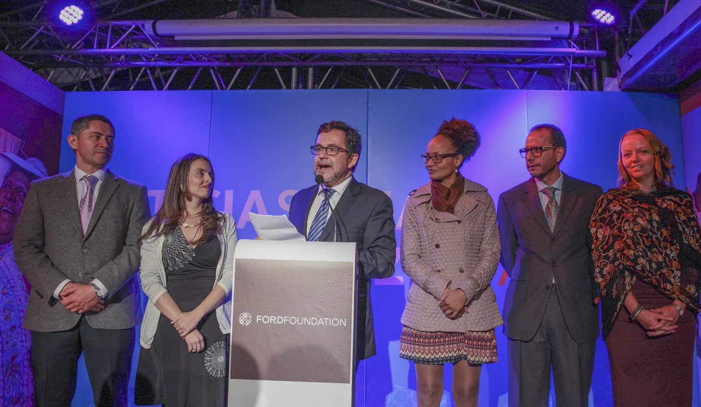

Fundación Ford | Universidad de los Andes
17 — 18 NOVIEMBRE 2026 · BOGOTÁ, COLOMBIA
Filantropía en tiempos de cambio:
lecciones y horizontes.
Más de 65 años de la Fundación Ford en la Región Andina. Un encuentro para mirar nuestra historia, dialogar sobre el presente e imaginar futuros más justos.

UNA HISTORIA QUE SIGUE TRANSFORMÁNDOSE01 / EL ENCUENTRO
Una historia compartida.
Un horizonte colectivo.
En 2026, la Fundación Ford conmemora más de 65 años de compromiso con la Región Andina y una década desde la reapertura de su oficina regional en Bogotá.
Este encuentro reúne a organizaciones sociales, líderes, academia y aliados para reflexionar sobre la evolución de la filantropía frente a los cambios sociales y políticos de la región, y sobre los desafíos de la democracia, la paz, los derechos humanos y la justicia climática.
Descubre las conversaciones ↗02 / PROGRAMACIÓN
Dos días para pensar el futuro.
La programación y los participantes pueden estar sujetos a cambios.
03 / ARCHIVO FOTOGRÁFICO
Imágenes de una historia viva.
Una mirada a décadas de colaboración, comunidades y transformación en la Región Andina.
04 / IN MEMORIAM
En memoria de
Gustavo Gallón.
Un espacio de homenaje a su legado y a la defensa de los derechos humanos en Colombia.
05 / NOS VEMOS EN BOGOTÁ
El lugar del encuentro.
17 y 18 de noviembre de 2026
Universidad de los Andes
Auditorio Lleras Camargo
Bogotá, Colombia